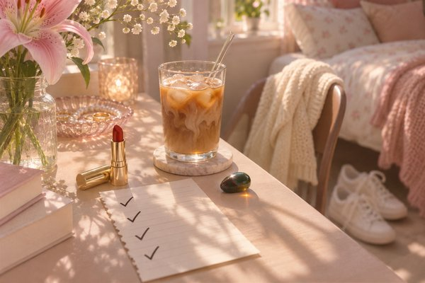
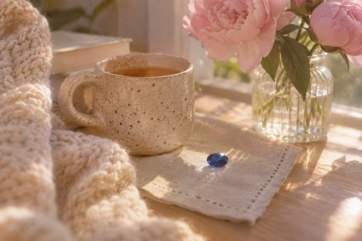
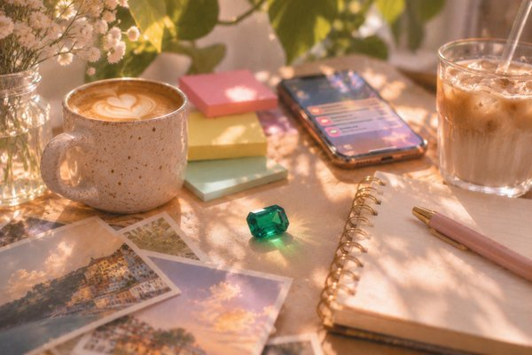
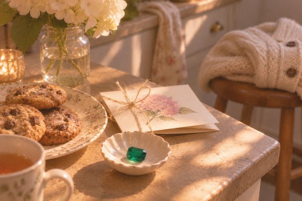
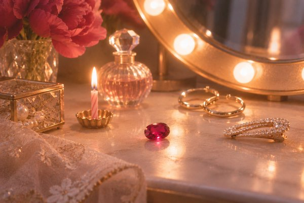
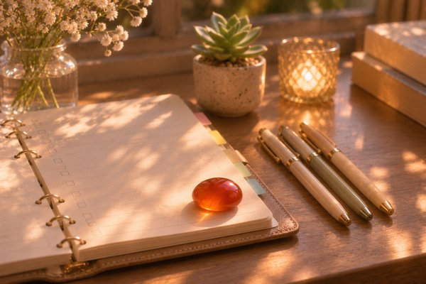
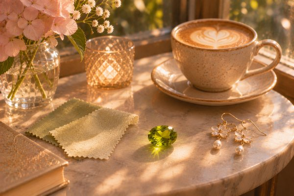
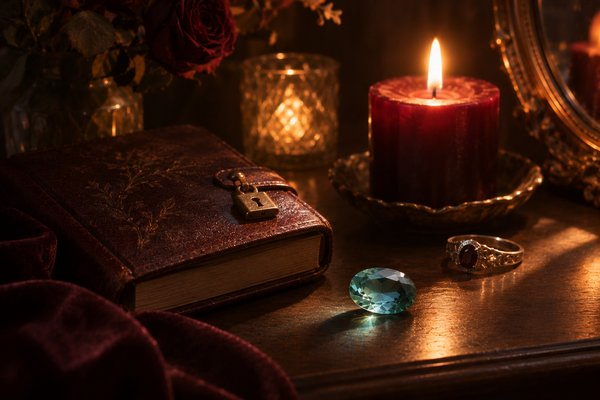
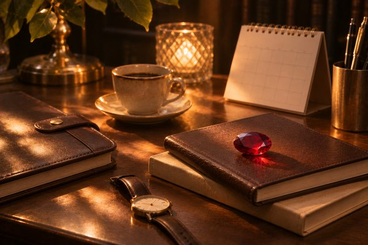
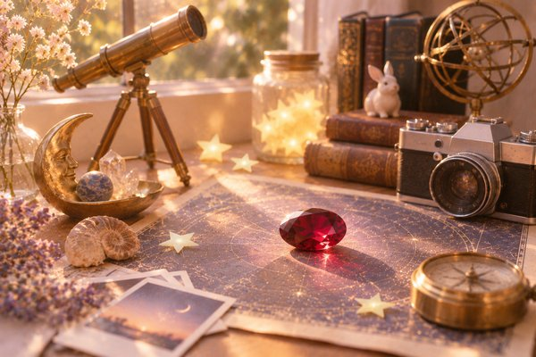

Your zodiac sign already has a stone, and the idea is older than astrology apps by about 2,000 years. Somewhere between ancient religious writings, Renaissance occult books, and a collection of mysterious little poems, each sign found its own color. Some signs even have two. The table below has every sign's stone, but the story behind them is worth knowing.
| Sign | Dates | Stone | Color |
|---|---|---|---|
| Aries | March 21 to April 19 | Bloodstone | Dark green with tiny red flecks |
| Taurus | April 20 to May 20 | Sapphire | Deep blue |
| Gemini | May 21 to June 20 | Emerald and moonstone | Vivid green and milky shimmer |
| Cancer | June 21 to July 22 | Emerald | Soft deep green |
| Leo | July 23 to August 22 | Ruby | Glowing red |
| Virgo | August 23 to September 22 | Carnelian | Warm orange-red |
| Libra | September 23 to October 22 | Peridot (chrysolite) | Bright yellow-green |
| Scorpio | October 23 to November 21 | Beryl | Cool sea blue-green |
| Sagittarius | November 22 to December 21 | Topaz | Golden |
| Capricorn | December 22 to January 19 | Ruby | Deep red |
| Aquarius | January 20 to February 18 | Garnet | Deep wine red |
| Pisces | February 19 to March 20 | Aquamarine and amethyst | Sea blue and violet |
The ancient connection
Where Did Zodiac Stones Begin?
Before anyone matched a gemstone to your personality, twelve stones appeared together in the Book of Exodus. They decorated the high priest's breastpiece, arranged in four rows of three. Each carried the name of a tribe and was worn over his heart.
In AD 93 or 94, Josephus offered a striking reading in Book III of Antiquities of the Jews:
And for the twelve stones, whether we understand by them the months; or whether we understand the like number of the signs of that circle which the Greeks call the Zodiack, we shall not be mistaken in their meaning.
St. Jerome repeated the idea around AD 396 in a letter to Fabiola.
Curiously, neither of them named a stone for each sign. That part of the mystery came later.
Inside the occult books
Who First Gave Each Sign Its Own Stone?
The earliest known list matching single stones to zodiac signs appears in Heinrich Cornelius Agrippa's Three Books of Occult Philosophy, published in 1533.
Open Book II to chapter 14, and you'll find a table built around the number twelve. One row holds the zodiac signs. The row beneath it holds their stones.
Libra had beryl. Scorpio had amethyst. Sagittarius had hyacinth, Capricorn chrysoprase, Aquarius crystal, and Pisces sapphire.
But the old books rarely agreed. A Spanish book published in 1604 left Pisces without a stone at all. By 1913, Pisces had amethyst instead.
So if you've ever found completely different stones for your sign while scrolling at midnight, you've stumbled into a disagreement that has lasted centuries. Even the old occult writers couldn't settle on one answer.
Twelve little verses
Where Does Today's List Come From?
In 1913, George Frederick Kunz published The Curious Lore of Precious Stones. Inside was a set of short anonymous verses, each pairing a zodiac sign with one gemstone.
There was a pattern hidden in those verses. Each sign received the old birthstone of the month in which its season begins.
Kunz himself noticed that zodiac seasons overlap the calendar months, which gives people more choice when picking a birth stone.
Today's list on this page starts from those verses, with a few changes: ruby for Leo, and two stones each for the twin-souled signs, Gemini and Pisces.
Maybe you've always felt drawn to a color that seems nothing like your usual personality. Those two signs have the most interesting answer: their two stones are two sides of the same girl.
The colors of your element
What Does Your Element Say About Your Stone?
Fire (Aries, Leo, Sagittarius): Bloodstone's dark green hides tiny red flecks, ruby glows red, and topaz shines golden. Think of your quiet determination, your dramatic entrance, and your restless need to see what lies beyond.
Earth (Taurus, Virgo, Capricorn): Deep blue sapphire, warm orange-red carnelian, and deep red ruby mirror your composed surface and the stubborn, surprisingly passionate girl underneath.
Air (Gemini, Libra, Aquarius): Emerald's vivid green, moonstone's milky shimmer, peridot's bright yellow-green, and garnet's wine red reflect your changing moods, your curiosity, and your beautifully unpredictable thoughts.
Water (Cancer, Scorpio, Pisces): Soft green emerald, cool blue-green beryl, sea blue aquamarine, and violet amethyst mirror the feelings you keep to yourself, the memories you replay, and the imaginary conversations you have before falling asleep.

Aries
March 21 to April 19
Bloodstone
Brave on the outside, softer than anyone guesses.

Taurus
April 20 to May 20
Sapphire
Calm and steady, quietly keeps every memory.

Gemini
May 21 to June 20
Emerald and moonstone
The chattiest girl in the group, with quiet rooms inside.

Cancer
June 21 to July 22
Emerald
Looks after everyone, hopes someone looks after her.

Leo
July 23 to August 22
Ruby
The spotlight girl who wants to be truly known.

Virgo
August 23 to September 22
Carnelian
Has everything organized, secretly a hopeless romantic.

Libra
September 23 to October 22
Peridot (chrysolite)
Keeps everyone happy, hides strong opinions.

Scorpio
October 23 to November 21
Beryl
Mysterious on the surface, longing to be understood.
Sagittarius
November 22 to December 21
Topaz
Jokes about everything, dreams very seriously.

Capricorn
December 22 to January 19
Ruby
Has a plan for everything, deeply romantic inside.

Aquarius
January 20 to February 18
Garnet
Independent and unusual, more sentimental than anyone knows.
Pisces
February 19 to March 20
Aquamarine and amethyst
Chill on the outside, a whole ocean of feelings inside.
Which Color Feels Like You?
Find your sign above and read the story behind its stone, the side of you it mirrors, and the little things about yourself you rarely put into words.
If you want to sit with your color for a while tonight, Gemflow turns a stone close to it into slow-moving light on your phone. Some colors feel strangely familiar.
FAQ
What are the 12 zodiac stones?
Aries has bloodstone, Taurus sapphire, Gemini emerald and moonstone, Cancer emerald, Leo ruby, Virgo carnelian, Libra peridot, Scorpio beryl, Sagittarius topaz, Capricorn ruby, Aquarius garnet, and Pisces aquamarine and amethyst. Gemini and Pisces each have two stones.
Where do zodiac stones come from?
Josephus connected the twelve stones of the biblical high priest's breastpiece with the zodiac in AD 93 or 94. The earliest known sign-by-sign list appears in Agrippa's 1533 occult writings. Later lists gave different pairings.
Is my zodiac stone the same as my birthstone?
Not always. The American monthly birthstone list was set in Kansas City in 1912. Monthly birthstones follow calendar months, while zodiac stones follow astrological signs. Because each sign spans two months, the stone for your sign and the stone for your birth month can differ.